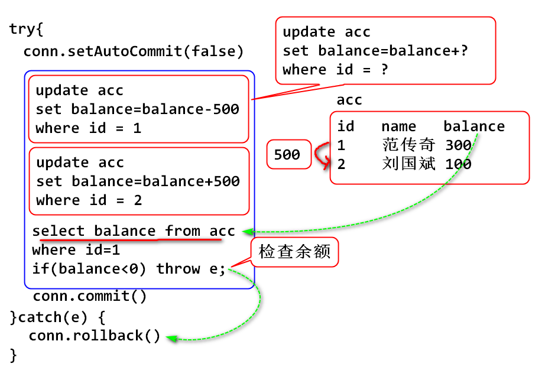
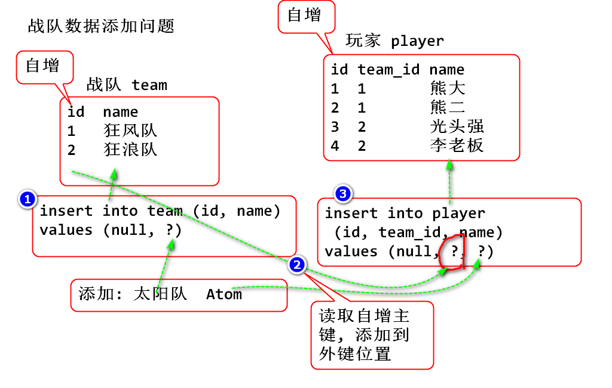
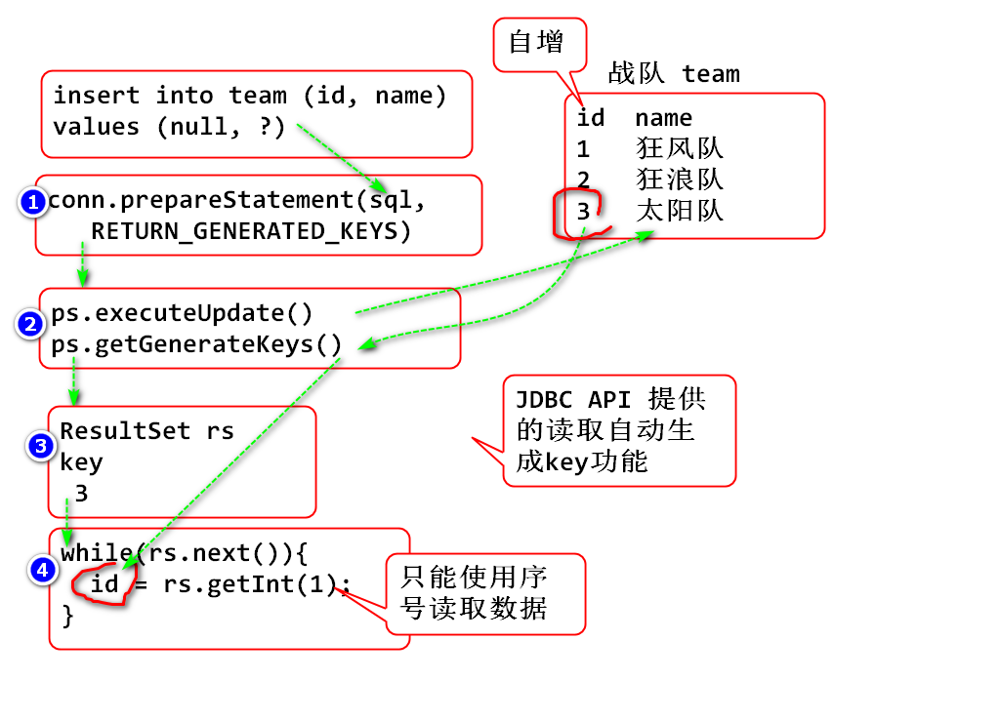

PreparedStatement
案例:
public class BatchDemo01 {
public static void main(String[] args) {
/**
* 将批量参数传递到数据库执行
*/
String sql=
"insert into t_user (id, name) values (?,?)";
Connection conn = null;
try {
conn = DBUtil.getConnection();
PreparedStatement ps=conn.prepareStatement(sql);
ps.setInt(1, 100);
ps.setString(2, "user1");
//将上述参数添加到ps的参数缓冲区中
ps.addBatch();
ps.setInt(1, 101);
ps.setString(2, "user2");
//将上述参数添加到ps的参数缓冲区中
ps.addBatch();
//将缓冲区中的参数一批发送到服务器执行
int[] arr = ps.executeBatch();
System.out.println(Arrays.toString(arr));
} catch (Exception e) {
e.printStackTrace();
} finally {
DBUtil.close(conn);
}
}
}
使用JDBC API 调用数据库事务(编程式事务处理)
原理:

案例:
创建数据库表
create table acc(
id int,
name varchar(100),
balance double
);
insert into acc (id, name, balance)
values (1, '范传奇', 1000);
insert into acc (id, name, balance)
values (2, '刘国斌', 200);
案例:
public class TxDemo02 {
public static void main(String[] args) {
/**
* 事务演示
*/
trans(1, 2, 2000);
trans(3, 2, 500);
trans(1, 3, 500);
trans(1, 2, 500);
}
/**
* 从 from 账号 向 to 账号转钱, 钱数是money
*/
public static void trans(
int from, int to, double money) {
String sql1="update acc set balance=balance+? "
+ "where id=?";
String sql2="select balance from acc where id=?";
Connection conn = null;
try {
conn = DBUtil.getConnection();
conn.setAutoCommit(false);
PreparedStatement ps=conn.prepareStatement(sql1);
ps.setDouble(1, -money); //-500
ps.setInt(2, from);
int n = ps.executeUpdate();
if(n!=1) throw new Exception("汇出失败");
ps.setDouble(1, money); //500
ps.setInt(2, to);
n = ps.executeUpdate();
if(n!=1) throw new Exception("汇入失败");
ps.close();//ps对象用完了, 关闭释放
//检查汇出人的余额
ps = conn.prepareStatement(sql2); //重用ps变量
ps.setInt(1, from);
ResultSet rs = ps.executeQuery();
while(rs.next()) {
double balance = rs.getDouble("balance");
if(balance<0) throw new Exception("透支");
}
conn.commit();
} catch (Exception e) {
e.printStackTrace();
try {
if(conn!=null) {
conn.rollback();
}
} catch (SQLException e1) {
e1.printStackTrace();
}
} finally {
DBUtil.close(conn);
}
}
}
问题: 添加一个战队数据
create table team(
id int primary key auto_increment,
name varchar(10)
);
create table player(
id int primary key auto_increment,
name varchar(10),
team_id int
);
使用原因:

原理:

案例:
public class KeyDemo03 {
public static void main(String[] args) {
/**
* 读取自动生成的ID
*/
String sql="insert into team (id, name) "
+ "values (null, ?)";
Connection conn = null;
try {
conn = DBUtil.getConnection();
//创建可以返回自动生成key的 ps 对象
//GENERATED 生成的 KEYS"键"
PreparedStatement ps =
conn.prepareStatement(
sql, Statement.RETURN_GENERATED_KEYS);
ps.setString(1, "狂浪");
ps.executeUpdate();//ps中已经包含了生成的keys
//利用API读取包含在ps中的key,
ResultSet rs = ps.getGeneratedKeys();
//生成的key就存储在 rs对象中
int id=0;
while(rs.next()) {
id=rs.getInt(1);
//只能使用序号读取,1是第一个数据序号
}
System.out.println(id);
} catch (Exception e) {
e.printStackTrace();
} finally {
DBUtil.close(conn);
}
}
}
元数据: 与XXX相关的数据
数据库连接相关的数据? 称为数据库连接的元数据.
Connection conn
Connection 上提供的相关数据(元数据)查询的API
ResultSet也提供的相关数据查询API
元数据案例:
public class MetaDataDemo04 {
public static void main(String[] args) {
/**
* 获取数据库连接相关的元数据
*/
Connection conn = null;
try {
conn = DBUtil.getConnection();
//获取 元数据 对象meta
DatabaseMetaData meta=conn.getMetaData();
//meta封装了与当前数据库有关的信息
String product=meta.getDatabaseProductName();
String version=meta.getDatabaseProductVersion();
System.out.println(product+version);
String sql = "select * from team";
Statement st=conn.createStatement();
ResultSet rs=st.executeQuery(sql);
//获得 rs(结果集) 相关的元数据
ResultSetMetaData m=rs.getMetaData();
//m对象包含 与结果集有关的数据
//列的数量, 类名等. Column列
int n = m.getColumnCount();
System.out.println(n);
System.out.println(m.getColumnName(1));
System.out.println(m.getColumnName(2));
} catch (Exception e) {
e.printStackTrace();
} finally {
DBUtil.close(conn);
}
}
}
Servlet: 是指在在服务器上执行的程序片段.
参考: http://doc.tedu.cn/tomcat/index.html
实现步骤
创建一个类 DemoServlet
向response发送 Hello World
public class DemoServlet implements Servlet{
public void destroy() {
}
public ServletConfig getServletConfig() {
return null;
}
public String getServletInfo() {
return null;
}
public void init(ServletConfig arg0) throws ServletException {
}
public void service(ServletRequest request,
ServletResponse response)
throws ServletException, IOException {
response.setContentType("text/html");
//将 Hello World 写到response中
response.getWriter().print("Hello World!");
}
}
配置web.xml
将请求路径 /hello 映射到 DemoServlet 上
<!-- 登记 Servlet -->
<servlet>
<servlet-name>demo</servlet-name>
<servlet-class>day01.DemoServlet</servlet-class>
</servlet>
<!-- 将Servlet 映射到 URL 连接 -->
<servlet-mapping>
<servlet-name>demo</servlet-name>
<url-pattern>/hello</url-pattern>
</servlet-mapping>
将web程序部署到 Tomcat 中
使用浏览器请求 /hello, 在浏览器中看到 Hello World!
http://localhost:8080/Servlet01/hello